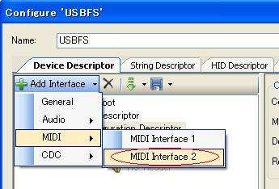
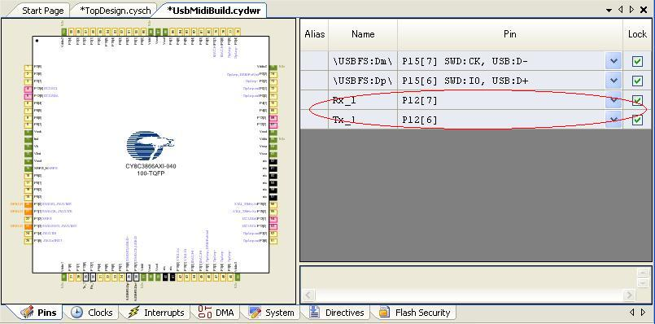
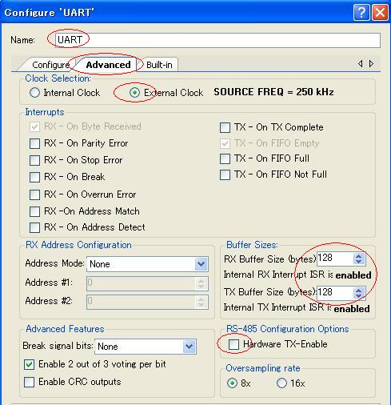

このコンテンツは、PSoC3を使用したUSB MIDIの実験です。
USBのベンダIDはないので、実行バイナリの配布はありません。
PSoC1の実験コードをPSoC3で動かしてみた。
（PSoC5LPにデバイスを切り替えて生成し直すだけで動いた。）
PSoC3(PSoC5LP)にはUSB MIDIモジュールがあるが、PSoC1には用意されていないので、
PSoC1,PSoC3,(PSoC5),PSoC5LP共通で扱えるものをということで。
（さて、PSoC4はどうしたものか。）
- USBFSモジュールを使用。
- USBFSのコンフィグレーションを利用。
(用意されているUSB MIDI APIは使わない。) - UARTモジュールを使用。
- Clockモジュールを使用。
- 送信ポートをOpen Drain Lowに設定して、簡略化。(但し、動作は未確認。)
PSoC1の実験コードの回路例をご参照ください。
KIT-001を使用して、なんとなく動いたので公開。（勿論、何の保証もありません。）
- USB MIDI used PSoC3 & PSoC5LP
Last update 2023/12/24
配布内容- usbmidimain.c, usbmidiain.h (USB MIDI のメインルーチン)
ビットフィールドの4ビットニブルのビット位置が異なったので書き換えと
data変数名がNGなので書き換え。基本PSoC1と同じ。 - usbmididrv.c, usbmididrv.h (USBFS, UART デバイスインターフェース)
PSoC3用。（PSoC5LPもそのままでOKだった。）
- usbmidi.c, usbmidi.h (USB MIDI データ形式変換処理)
ビットフィールドの4ビットニブルのビット位置が異なったので書き換えと
data変数名がNGなので書き換え。基本PSoC1と同じ。
ディスクリプタはコンフィグレーションを利用なので、配布ファイル数が少ない。
履歴- システム・コモン・メッセージパック化処理修正。(2023/12/24)
- PSoC5LPで動作確認ができたので、タイトルなど修正。(2013/4/13)
- 2バイトメッセージ受信バグ修正。(2012/10/27)
- 公開(2012/7/15)
- usbmidimain.c, usbmidiain.h (USB MIDI のメインルーチン)
- PSoC Creator 2.0を起動してProjectを作成。
- TopDesignでUSBFSを配置。
- ハード設定
- USBFSのConfigure
- モジュール名をUSBFSに変更。
- Device Descriptor
- MIDI Descriptor
- Enable MIDI Class APIのチェックを外す。
- Audio Controlを選択して追加。
- MIDI DescriptorsにフォーカスしてStreamingを選択、設定して追加。
bInterfaceNumberを1
- MS Headerを選択して追加。
- MIDI In Jackを選択、設定して追加。
bJackTypeをEMBEDDED
bJackIDを1
- MIDI In Jackを選択、設定して追加。
bJackTypeをEXTERNAL
bJackIDを2
- MIDI Out Jackを選択、設定して追加。
bJackTypeをEMBEDDED
bJackIDを3
bNrInputPinsを1
baSourceIDの[0]を2
baSourcePinの[0]を1
- MIDI Out Jackを選択、設定して追加。
bJackTypeをEXTERNAL
bJackIDを4
bNrInputPinsを1
baSourceIDの[0]を1
baSourcePinの[0]を1
- Endpoint Descriptorを選択、設定して追加。
EndpointNumをEP1
Intervalを0
Max Packet Sizeを64
- Endpoint Descriptorを選択、設定して追加。
EndpointNumをEP2
DirectionをIN
Intervalを0
Max Packet Sizeを64
- MS Headerを選択して追加。
- Enable MIDI Class APIのチェックを外す。
- Device Descriptor
- Configuration Descriptorにフォーカスして
Add Interfaceのpull downからMIDIのMIDI Interface 1を選択
- Configuration Descriptorにフォーカスして
Add Interfaceのpull downからMIDIのMIDI Interface 2を選択

- Configuration Descriptorにフォーカスして
- OKでConfigure終了
※一部ディスクリプタのトータルの長さが同じにならないのだが．．．
- モジュール名をUSBFSに変更。
- TopDesignでUARTとClockを配置。
- ハードを設定
- Pinを設定。

- Pinを設定。
- ClockのConfigure
- UARTのConfigure
- モジュール名をUARTに変更して値を設定。
Advancedタブ
External Clockを選択
Buffer Sizeを送受信共に128
Hardware TX-Enableのチェックを外す

- モジュール名をUARTに変更して値を設定。
- Tx_1出力ポートのConfigure
- ダウンロードしたファイルをmain.cのフォルダへ展開してプロジェクトへ追加。
- main.cを編集してビルド。
usbmidimain.hをインクルード
CyGlobalIntEnable;のコメントを外す。
usbmidimain()の呼び出しを追加。（行きっきりなので、forはいらないけど。）

{kind=link}
{kind=link}
{kind=link}
{kind=link}
{kind=link}
{kind=link}
{kind=link}
{kind=link}
{kind=link}
{kind=link}
{kind=link}
{kind=link}
{kind=link}
{kind=link}
{kind=link}
{kind=link}
{kind=link}
{kind=link}
{kind=link}
{kind=link}
{kind=link}
{kind=link}
{kind=link}
{kind=link}
{kind=link}
{kind=link}
{kind=link}
{kind=link}
{kind=link}